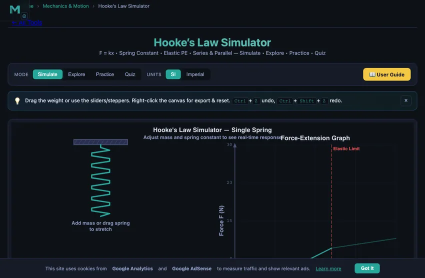

Understanding Hooke’s Law — Free Interactive Simulator

Hooke’s Law states that the force a spring exerts is directly proportional to its extension: F = kx. The constant k is the spring constant in N/m. This law holds only within the elastic limit — beyond it, permanent deformation occurs. Use the simulator above to stretch the spring, watch F–x plot in real time, and compare series vs parallel configurations.
A 5 N Spring, a 0.05 m Stretch — The Cleanest Possible Worked Example
Set the simulator to a single spring with k = 100 N/m. Hang a 0.5 kg mass on it. The whole problem fits on a sticky note:
- Weight of the mass: W = mg = 0.5 × 9.81 = 4.905 N
- At equilibrium, spring force balances weight: Fspring = 4.905 N
- Extension: x = F/k = 4.905/100 = 0.049 m (4.9 cm)
- Energy stored: PE = ½kx² = ½(100)(0.049)² = 0.120 J
That energy figure is the one students miss most often. It is not F·x (that would give 0.240 J), because the force only reaches its full value at the final extension — on average through the stretch it is half. Geometrically: the area under the F-x line is a triangle, not a rectangle. I draw that triangle on the board for first-time learners and they remember the factor of one half forever.
A Common Misconception Worth Killing Early
Students sometimes say “a stiffer spring stretches less” as if stiffness causes the smaller stretch directly. The clearer statement is: a stiffer spring needs more force to produce the same stretch, so for a given load (like gravity pulling on a mass), it ends up stretched less. The cause is the load not changing; the result is the smaller extension.
Run the simulator with k = 50, 100 and 200 N/m for the same 1 kg mass. Extensions come out as roughly 196 mm, 98 mm, 49 mm — exactly halving each time the stiffness doubles. The simulator’s F-x line gets steeper too. Same load, different gradients, different equilibrium points.
Where Hooke Stops Being Hooke — The Elastic Limit
Push past the elastic limit and the force-extension line stops being straight. Three regimes you can see in the simulator’s extended-load mode:
- Elastic region (Hookean). F = kx exactly. Load and unload — the spring returns to its natural length. This is everything I have described above.
- Yielded but not broken. The line bends but the spring still pulls back, just not as much. Unload and the spring stays partially stretched. Real coil springs above their proof load behave this way.
- Plastic and approaching break. The line goes nearly flat — the spring stretches under barely-increasing load. The next small extension snaps it. In a workshop, this is what happens when you over-tension a valve spring once too often.
For an extension simulator like this, the elastic limit is shown as a dashed red line. Stay left of it and Hooke holds. Cross it and the simulator switches into the non-linear regime so you can see the deviation.
Where Hooke’s Law Shows Up Beyond Springs
The Hookean form — restoring force linear in displacement — appears everywhere small displacements matter. You don’t think of these as “springs” but they all obey F = kx for small enough x:
- Bonded atoms. Stretch the bond between two atoms in a solid; the restoring force is approximately Hookean for small displacements. That is why crystals have well-defined Young’s moduli, and why ultrasonic frequencies are predictable.
- Tuning forks & sensors. A tuning fork tine, a piezo accelerometer, a MEMS gyro’s proof mass — all obey Hooke’s law in their working range. The resonant frequency f = (1/2π)√(k/m) is exactly the SHM formula derived from F = -kx.
- Suspension bridges. The vertical sag of a hanging cable under a moving load is approximately Hookean for small loads. Engineers use the linearised form for fast preliminary design and switch to non-linear FEA only for final verification.
Force-Extension Graphs & Energy
A force-extension graph for a spring obeying Hooke’s Law is a straight line through the origin with gradient k. The area under the graph equals the elastic potential energy stored: Ep = ½kx². This energy can be fully recovered when the spring returns to its natural length (within the elastic limit). The simulator above lets you see this energy area grow in real time as you increase the load.
Series & Parallel Spring Combinations
When springs are placed in series (end to end), the effective spring constant is lower than either individual spring: 1/keff = 1/k1 + 1/k2. In parallel (side by side), the stiffness adds up: keff = k1 + k2. Toggle between configurations in the simulator to see the difference in extension for the same load.
How to Use This Tool
In Simulate mode, drag the weight or use the sliders/steppers to apply force. Watch the F–x graph plot in real time and the live equation overlay update. Toggle SI / Imperial for unit conversion, open Show Calculations for the full derivation in classical math notation, or right-click the canvas to export CSV/PNG. Practice generates random problems and Quiz tests your understanding with 5 questions.
Hooke’s Law & Spring Formulas
| Property | Formula | Unit |
|---|---|---|
| Hooke’s Law | F = k × x | N |
| Spring Constant | k = F / x | N/m |
| Elastic Potential Energy | PE = ½ k x² | J |
| Springs in Series | 1/keff = 1/k1 + 1/k2 | N/m |
| Springs in Parallel | keff = k1 + k2 | N/m |
| Natural Frequency (mass-spring) | f = (1/2π) √(k/m) | Hz |
Typical Spring Constants by Application
| Application | Approx. k (N/m) | Material |
|---|---|---|
| Ballpoint pen spring | 100 – 300 | Music wire |
| Screen door spring | 500 – 1 500 | Galvanised steel |
| Automotive valve spring | 15 000 – 50 000 | Chrome vanadium |
| Car suspension spring | 20 000 – 60 000 | Chrome silicon |
| Industrial die spring | 50 000 – 200 000 | Alloy tool steel |
| Railroad buffer spring | 500 000+ | High-carbon steel |
Explore Related Simulators
If you found this Hooke’s Law simulator helpful, explore our Spring Design simulator, Stress–Strain Curve simulator, Simple Harmonic Motion simulator, Universal Testing Machine simulator, and Simple Pendulum simulator for more hands-on practice.